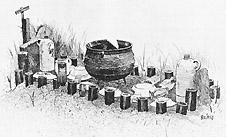
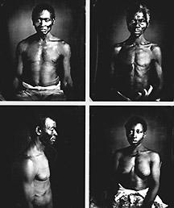

|
The 500,000 Africans brought to mainland North America between 1619 and 1807
derived from an area far more extensive and diverse than that to which they were
transported. They came--at least 70 percent by a direct crossing rather than by
way of the West Indies--from an African coastal belt as wide as 500 miles,
stretching 7,000 miles from Mauritania to northern Mozambique. Even though the
great majority of African immigrants to North America hailed from a relatively
smaller swathe of West Africa, the range of climatic, geographical, and
ecological areas, and ethnic and cultural types, remained at least as great as
those from which the non-African Americans derived.
This great variety, coupled with the part-accidental, part-calculated mixing
of different Africans, and the comparatively healthy demographic conditions in
North America, guaranteed that the African links would be less continuous than
for Caribbean and Latin American slave groups. As a result, the African
component of the Afro-American culture was relatively quickly diffused, and
progressively more generic. Yet it is still vital to examine and differentiate
the African background with as much precision as possible. This will enable us
to understand the differences between the Africans transported and the degree to
which they shared common and easily transferable features. It also will provide
insights into both those cultural elements that could be carried and retained
over generations and those that were so intrinsically African that they were
left behind forever.

Voodoo totems like these, called gris-gris, were
used by some slaves, particularly in Louisiana. Voodoo was among
the elements of slave religion that show a distinct African
influence.
|
Similar preferences on the part of slave owners, and the same exigencies of
trading conditions, determined that the catchment area for North American slaves
was very similar to that of the British Atlantic slave trade. Like the English,
the Americans generally preferred slaves from west of Dahomey to those from
further east and south (the preference of South Carolinians for Senegambians
balancing out the Virginians' preference for Gold Coast slaves). Angolans,
however, were preferred to Congolese or any slaves from the Bights of Benin and
Biafra, particularly the latter. Americans to a degree, like the English, were
constrained by availability and cheaper prices to take progressively more slaves
from trading areas further east and south, and especially from the Bight of
Biafra. This trend, though, was offset by other factors. American traders, using
mainly smaller ships and without many shore establishments, increasingly took
proportionately more captives than the English from the Upper Guinea Coast, from
African traders around the mouth of the Congo, and from Portuguese established
at Luanda and Benguela.
The number and types of slaves available for transshipment at the African
coast were determined by local geographical as well as political, social, and
economic conditions. Population densities were largely determined by the means
of subsistence. This in turn was mainly decided by climate, soils, and
topography. West Africa, broadly, is characterized by latitudinal regions shaped
by the amount of rainfall and its seasonal variations. These range from the
immense central belt of equatorial rain forest, outward from the equator to
north and south through woodland savannas, grassy steppe lands with only
seasonal rains, to outright desert with hardly any rain at all. There are,
though, significant coastal variations, particularly in the bulge of West Africa
north of the equator, affected by elevation, prevailing winds, and offshore
currents. These include the summer "monsoonal" belt of Upper Guinea with its
interior mountain variants in the Futa Jalon, the relatively dry coastal region
of modern Ghana (always relatively healthy for European traders), and the
monsoonal-equatorial excess of the Cameroon Mountains, with an annual rainfall
as high as 400 inches. The upper slopes of Mount Cameroon may be thirty degrees
cooler than the nearby coast, and desert temperatures may fall as much as fifty
degrees in the nights, but only at the northern and southern extremes of the
coast is there a significant annual variation. Though soils vary (and are not
often really good), the critical regime boundaries are formed by the sixty-inch
and twenty-inch isoyets. The former delimit the range of tropical forest; the
latter, the limit of agriculture without irrigation. A valuable further
indicator might be the lines showing the areas that receive at least four inches
of rainfall each month, allowing for all types of plant growth throughout the
year (and thus several crops), and the considerable area in the savanna and
Sahel that receives less than one inch of rain for six or more months each year.
Each region has its distinctive native vegetation and indigenous agriculture,
ranging from an almost exclusive reliance on hunting and gathering in the
densest equatorial forest, through predominantly root, bean, and tree
cultivation in the tropical forest belt, various kinds of cereal in the woodland
and savanna areas (including rice in the best irrigated areas), to pure nomadic
pastoralism in the Sahel. Only the desert, mountaintops, and substantial areas
of coastal mangrove swamp stand virtually unproductive. One great cultivation
boundary was the line between the predominance of the yam and the area where
grains provided the chief subsistence. Another was that region, roughly
coincident with the forest belt, beyond which the tsetse fly reigned, and
raising cattle, save for an inferior dwarf variety, was almost impossible.
As a consequence of these divisions, which were greatly intensified by the
introduction, mainly into the coastal and forest belts, of bananas and new forms
of yam from Asia, and cassava and maize from America, there was, north of the
equator, one belt of dense and increasing population close to the coast. Another
stood some 500 miles inland, in the optimal areas for growing grains and raising
domestic animals, with an intermediate area of low population density. South of
the equator, the coastal region was less populated except around the major
settlements and the mouths of the great rivers. The areas of densest population
tended to follow the river valleys, particularly those of the Congo River and
its southern tributaries, and the Kwanza River, where they traversed the richly
diversified area between tropical forest and savanna. In any region, however,
there could be local population variations. These depended on the degree of
political stability, the stimulus of mining or trade, and the existence of
rivers or lakes to provide irrigation or resources of fish. Other factors--the
incidence of tribal conflict, religious war, or the disastrous incursions of
slave-catching enemies--had negative demographic implications.
Regional variations in traditional African occupations and skills played
almost as significant a role in buyer preference as did the age, health, and
stereotypical characters of slaves purchased. And such transferable attributes
certainly shaped and sustained the Afro-American culture. Farming techniques
from the African forest, such as rotational slash-and-burn and swidden
agriculture, were of less use in North America than in the American tropics. But
the drudgery of hoe cultivation--with its far from simple techniques of
breaking, aerating, and irrigating the soil, planting and weeding--became as
distinctive a feature of American slave plantations as of much West African
farming. Even more direct carryovers were the knowledge of rice cultivation and
cattle herding. The former made slaves from parts of Upper Guinea and the
"Inland Delta" of the Niger vital to the development of South Carolina.
Expertise with cattle inclined planters to choose Africans from the pastoral
cultures of the northern savanna, such as the Malinke, to manage their stock.
Of almost equal utility on the plantations were the wonderful skills in
woodworking found throughout West Africa. Important too were the rarer,
quasi-magical crafts of working in iron and other metals that gave black
blacksmiths, even on plantations, mystery and reputation. Other West African
crafts--of a sophistication lost upon most whites, and denigrated or ignored by
masters because they were not obviously valuable--also influenced the quality of
life in the quarters. To different degrees in different places, these included
sometimes interrelated skills and styles of carving, pottery, dyeing, weaving,
and basketry. Much the same held true of the richly varied and subtle traditions
of music, drumming, dancing, and folklore carried from Africa to the New World.
Afro-American slaves, however, exhibited an ethnic and cultural diversity far
beyond variations in traditional technical and creative skills. This owed far
less to planter preferences, or even African ecological variations, than to
sociopolitical factors that, among other things, helped to determine which
Africans should be delivered to the coast for trade. West African conditions,
moreover, went through immense changes during the 400 years of the Atlantic
slave trade, many of them resulting directly from the trade itself. It should be
remembered, though, that the trade to North America occurred almost entirely
within the second half of the process.
Perhaps the most important ethnic boundary in western Africa is the northern
extent of Bantu-speaking people. This line coincides roughly with the
Congo-Benue-Chad watershed and the Cameroon Mountains. Yet the basic distinction
between the several hundred Bantu languages and dialects, and a similar number
of non-Bantu languages, meant nothing to American planters. Much more important
were the distinctions--owing as much to ecology as to the patterns of trade and
warfare--between "stateless," chieftainly or monarchical, and imperial systems
of political organization. Perhaps the most important boundary in the Atlantic
slave trade era was the southern extent of the Islamic religion, with its
fundamental sociopolitical and cultural implications.
In Bantu and non-Bantu West Africa alike, even in sovereign states, the basic
units of political organization were the village and the kinship group. Villages
were clusters of family households, usually polygynous and patriarchal, but also
internally interdependent. Within the household, the roles of women were
multiple and vital, involving most of the lighter farming tasks, the tending of
stock and marketing, as well as purely domestic chores. The men were engaged in
the heavier farming tasks, such as clearing new fields, in cattle husbandry, and
in hunting and fishing. But men also monopolized the more important crafts and
most of the creative arts. At seasonally busy times--such as the harvesting of
grains--the whole household was employed together. Children were put to work
from an early age in such light but important tasks as weeding, tending stock,
or fetching water. These African village and household functions and traditions
were easily carried over into North America, particularly where the slave
quarters were well integrated and family life was possible, or even encouraged.
With very close kinship links and internal ranks and canons of honor,
reputation, and seniority, African villages were in most respects
self-sufficient. Broadly speaking, it was a peasant existence. Land was the
common property of the folk, and concepts of freehold tenure were as strange to
most Africans as was the notion of producing crops for surplus and export.
Typically, village land was allocated to household heads, according to need and
the ability to farm it. And the village was effectively governed by councils of
elders, sometimes in parallel with quasi-religious "secret societies." Religion,
indeed--contrary to the ignorant assertions of most European travelers--played
an essential part in all African lives. It provided a satisfying explanation for
natural phenomena, a means of intercession, through priests exercising rituals
of sorcery and magic, as well as, in most cases, a reinforcement of the social
order.
A belief in a universal spirit continuum served as the common denominator in
most African religions. This linked persons with the spirits of past kin and
folk, as well as with those yet to be born. It also bound the spirits of
humankind with all living things, and with numinous objects--rivers, springs,
prominent rocks, or certain trees--generally regarded by Europeans as inanimate.
Certain objects, locations, or phenomena were sacred, sometimes personified in a
pantheon of lesser gods. Such, however, were always subordinate to a supreme
spirit-principle, too vast and unimaginable to be easily personified.
|

Leaving goods on a grave for use in the afterlife was common,
a custom brought over from Africa.
|
The burial sites of kin--often located in the core of the village or even in
the household compound--were especially sacred. So too were natural objects
vital to the community (such as rivers, springs, or refuge-rocks), or places
associated with the origins of the group in folk mythology. Precise structures
of belief, pantheons of gods, and forms of ritual extended beyond the narrowest
groupings towards ethnic boundaries. These included associations of priests and
initiates, and often the existence of a central oracle almost defined some
larger ethnic units. Such ethnic entities were sometimes political units too,
and imperial rule could even subsume different ethnicities. At the basic
sociopolitical level, though, the individual villages were linked to contiguous
units, more by concentric bands of wider kinship deriving from common lineage
than by the need for trade or common defense. Considerable long-distance trade
existed everywhere before the years of European contact. And village markets,
concerned with local barter as part of larger commercial networks, served much
as social meeting places, just as clannish confederacies were often the limit of
political concentration. This was particularly true in areas--such as Iboland
before the slave trade intensified--isolated by poor communications, with no
shortage of subsistence land, and an absence of external enemies.
Elsewhere, however, more formal states emerged. These existed under dynastic
rulers who, despite the often miniscule extent of their sway, were commonly
accorded semi-divine or at least mythically exotic status--buttressed by the
authority of a priestly caste. Debate continues as to whether this system of
dynastic monarchy developed from intrinsic forces, or as a result of wars of
conquest and cumulative diffusion radiating from across the Sudan. Certainly,
the presence of ruling, leisured, warrior and priestly castes, and subordinate
classes, including slaves, was usually associated with earlier migrations and
wars of conquest. The size and effectiveness of West African states, moreover,
related to the importance of trade. Commerce flowed by river or overland
caravan, with important market towns at trade crossing places, large capital
cities, and in the Niger Delta, even what might be termed commercial
city-states.
The extent and power of West African states, at least until the Atlantic
trade was underway, also tended to increase from the forest belt northward and
westward toward the Sahara and the Sudan, and southward into the savanna. In the
north they reached their apogee in the areas of nomadic pastoralism,
transhumance, frequent migrations, and long-distance trade. It was here that the
earliest known Sudanic kingdoms--Takrur, Ghana, Gao, and Kanem--and their
successors developed during the European medieval period. These were centered on
Senegambia, the Upper Niger, and Lake Chad. Large and sophisticated states--the
sixteenth-century Songhai Empire being as extensive as Western Europe--were
created by armies of camel or horse cavalry, with powerful dynastic rulers,
nobles, and priests. They were sustained by networks of trade that tapped gold,
kola nuts, and slaves from the forest belt partly in exchange for salt. Traders
also distributed gold and slaves northward to the Maghrib and Mediterranean, and
eastward to the Nile. From the tenth century onward, their power was
indissolubly related to the spread of Islam, with its tendency toward holy wars
of conquest and the development of literacy and higher education. The Sudanic
rulers administered large, dispersed states, and organized long-distance trades
with complex credit machinery. They subsumed and refined, if they did not
originate, racial and chattel slavery.
Although there had always been substantial kingdoms in the southern savanna,
the coming of the Portuguese, with their Catholic religion, European weapons,
and growing demand for slaves, ushered in rapid political change. Indeed, north
and south of the equator alike, the European opening up of the West African
coast shifted the directions of trade. It also accelerated political
changes--processes, though, that already were well established before the first
slave cargo ever left for North America. Except for the Senegambian gateway to
the Guinea gold fields and "interior delta" of the Upper Niger, and the
Congo-Kwango and Kwanza River routes deep into the interior of south-central
Africa, the Atlantic slave trade affected mainly the area within 250 miles of
the coast. It reinforced those African states that traded most effectively with
the Europeans and, less directly, aided in the development of the more
aggressive kingdoms through the importation of firearms.
The chief of these changes south of the equator were the disruption, eclipse,
and eventual depopulation of the Bakongo Empire of Kongo. This resulted from
pressures from all sides, the absorption of the Ndongo into a Portuguese sphere
of influence, and the emergence of the Matamba and Kasenje kingdoms as powerful
middlemen between the deep interior and the coast. The Portuguese developed a
large-scale slave trade through Luanda, and likewise subverted the Ovimbundu in
the service of the port of Benguela. Yet an even more active trade remained in
African hands northward of the Congo River--particularly that carried on by
Loango with the help of Teke middlemen north of Stanley Pool.
North of the equator, similar processes saw limited European establishments
along the coast--notably in Senegambia and on the Gold Coast. These led to the
expansion or entrenchment of African polities--such as Benin, the city-states of
the Niger Delta, and numerous small states on the Upper Guinea Coast--that
functioned as independent middlemen. The most spectacular changes, though,
during the seventeenth and eighteenth centuries were the parallel, and partly
conflicting, rise of Asante, Dahomey, and Oyo. They expanded at the expense of
their neighbors both towards the coast and inland.
In almost all cases, this process of political ferment exacerbated the
indigenous system of slavery, whether directly to satisfy the rising Atlantic
demand for slaves, or as an incidental by-product of state-building wars. True,
as Philip D. Curtin and others have suggested, the Atlantic slave trade as a
whole may not have resulted in a net decline in the African population.
Nevertheless, much local depopulation and demoralization resulted. Many
societies were disrupted by increasing slave raiding from outside. And others,
such as the Kingdom of Kongo or the Tio north of Stanley Pool, were dispersed
when kings and traders sold their own free peoples to European traders.
Virtually all Africans carried to America were familiar with one form or
another of slavery. But very few had experienced the extreme form of hereditary
chattel slavery involving intense exploitative labor and social alienation that
evolved in the Americas. Exceptions included those mainly Muslim savanna areas
where slaves were needed for labor-intensive enterprises such as gold or salt
mining, or were shipped as commodities in distant markets themselves, carrying
other commodities on their heads. In time there were even some plantations
growing crops for export, as in the Sokoto Caliphate of Upper Nigeria, where
slaves toiled in the fields in gangs and lived in separate quarters. In an
almost exact parallel with plantation America, their masters provided them with
one or two days off per week to work their own provision grounds.
|

These photos were taken in 1850 as part of a study by
scientist Louis Agassiz, trying to demonstrate that the races were different
species. They are the earliest photographs of slaves whose names and African
origins are known. The name of the man at the top left has been lost, but he has
abdominal scars that are clearly tribal. The slave to his right is Renty, said
to be from the "Congo". Below him is his daughter Delia, and to her left is
Jack, a slavedriver with tribal scars born on the Guinea coast.
|
Even so, few such Muslim slaves were transported to the Atlantic Coast, and
traditional slavery in the areas most tapped was generally of a more "domestic"
kind. Nearly all African slaves belonged to a caste whose separate status
reflected earlier conquests and subjugations. Almost by definition, slaves
belonged outside the tribal lineage. But they were usually valued and protected
members of the community nonetheless. They could even rise to wealth and power
by fulfilling roles--military, commercial, priestly or administrative--denied to
members of the lineage. African slaves, indeed, were rarely sold after the first
generation of enslavement. There was a reluctance as well to sell women of any
kind because of their value as brides.
Who then were the Africans sold to the Europeans in the Atlantic trade? The
best recent estimates conclude that at least half were war captives. Less than
one-third were acquired by "normal processes"--through "lawful conviction of
crime, indebtedness, dependency and various types of servitude." The remaining
one-sixth were made up of "kidnap victims, strangers and unfortunates." The
American slave owners' preference for males (which was reflected in slave prices
in the Americas) was congruent with the Africans' desire to retain enslaved
females (whose value as brides was reflected in their invariably higher prices
within Africa itself). As Paul E. Lovejoy has calculated, of all slaves carried
to the Americas, 14 percent were children under fourteen years of age, 56
percent were adult males, and only 30 percent were adult females. This resulted
in an overall predominance of 63 percent males to 37 percent females. Put in
other terms, Lovejoy computed that of those Africans available for enslavement,
46 percent of females between the ages of fourteen and thirty (who represented
25 percent of the total) were retained in Africa. But virtually all men in that
age range (mounting to another 25 percent of the total) were exported. Of all
children under fourteen (representing 30 percent of the total), only 21 percent
were exported. Virtually none of the mature adults (20 percent of those
available) were exported.
Clearly, slave traders favored the stronger and healthier elements in the
African population. And it is significant to note that many of the least fit
failed to survive the rigorous journey to the coast by coffee or canoe. The
rigor of their transportation suggests an artificial factor that might have
given the Africans an advantage over the more chance-chosen European migrants.
Yet there were other physical characteristics of the slaves brought to North
America that had important implications for the Afro-American slave population.
Recent research shows that African slaves were on the average perceptibly
shorter not only than Europeans, but also than their own Creole descendants.
African slaves aged between twenty five and forty imported into the West Indies
in the first decade of the nineteenth century, for example, averaged 5 feet
4-1/2 inches for males, and 5 feet 1 inches for females. This was no less than
3-1/2 inches and 2-1/4 inches shorter, respectively, than American slaves
(Africans as well as Creoles) in the same age range between 1828 and 1860. This
differential may have been even greater in the earlier years of the traffic,
before new food crops began to improve the West African diet.
The maturation of Africans, moreover, was slower than that of American-born
bondsmen. African males apparently reached maximum height around twenty years of
age, more than a year later than male Creole slaves. And the age of menarche in
African females, at over eighteen years, occurred as much as two years later
than for Creole blacks, and even more than that for European females at that
time. In addition, the low percentage of females carried to America, the effects
of dislocation, the carryover of the common African custom of prolonged
lactation, and the fact that female slaves in Africa tended towards a very low
fertility rate, explain the comparatively low birthrate of African-born slaves
in the Americas. At the same time, though, because the climatic regime in North
America was healthier than elsewhere in the Americas, and indeed, healthier than
in Africa itself, these deficiencies were less critical in North America than in
the Caribbean and Latin America. As fewer slaves died, the percentage of
Africans needed rapidly grew less, and the proportion of African-born slaves in
North America fell below 10 percent as early as 1750. Two other demographic
factors also contributed significantly to the impact of the African heritage of
American slaves. First, throughout the slave-trade period slaves from different
African ethnicities were inextricably mixed. And, second, even in the plantation
colonies and states, the blacks never outnumbered the white free settlers.
Altogether, these forces explain why the African background faded and a
distinctive Afro-American identity surfaced more quickly in North America than
anywhere else in the hemisphere.
Source: Randall M. Miller and John David Smith, eds. Dictionary of
Afro-American Slavery (Westport, CT: Praeger, 1997), 10-23.
|